1920 · documents
1920 × 1080 CSS px · capture réelle
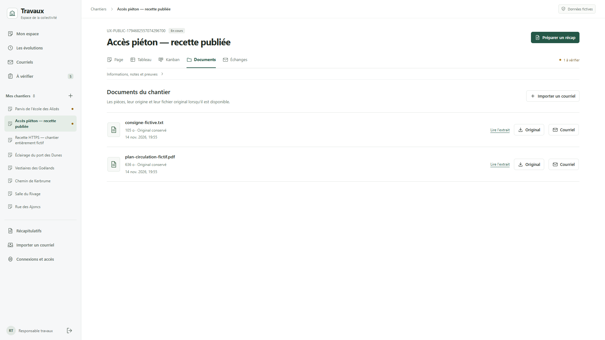
1920 · echanges
1920 × 1080 CSS px · capture réelle
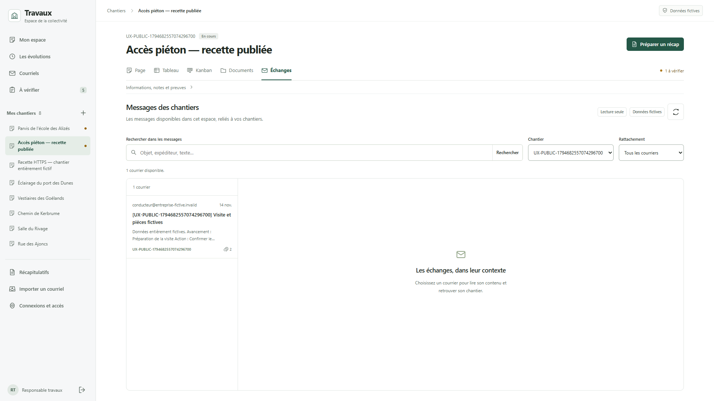
1920 · kanban
1920 × 1080 CSS px · capture réelle
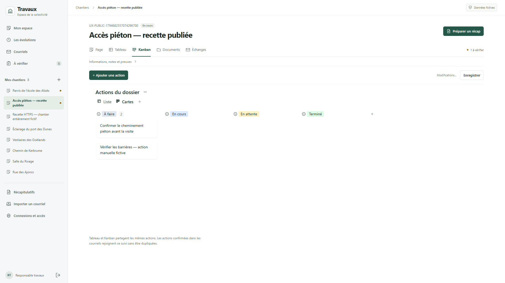
1920 · page
1920 × 1080 CSS px · capture réelle
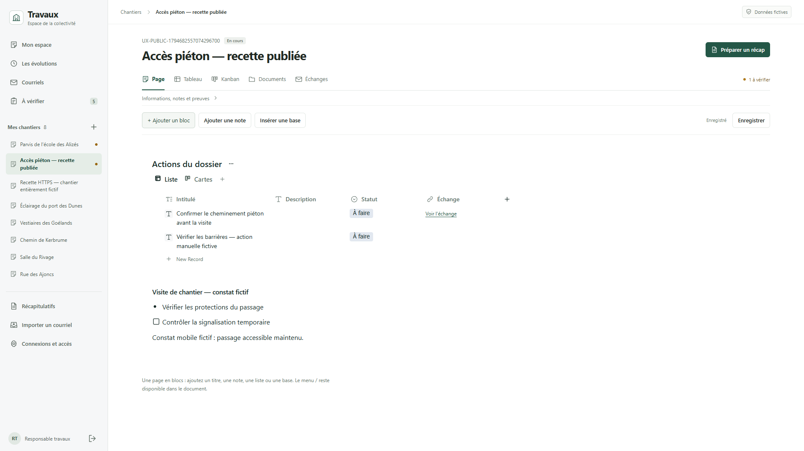
1920 · tableau
1920 × 1080 CSS px · capture réelle
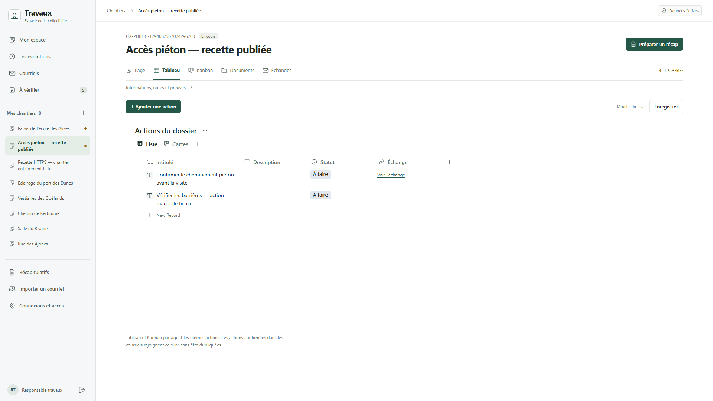
390 · documents
390 × 844 CSS px · capture réelle
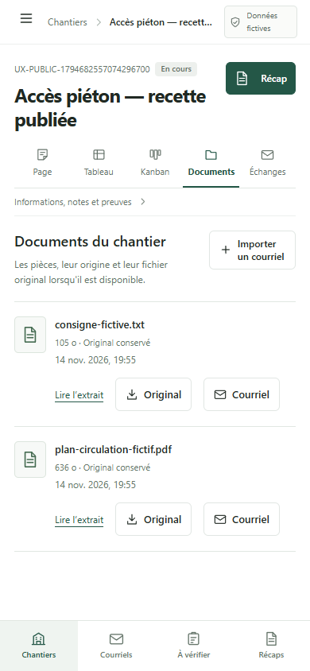
390 · echanges
390 × 844 CSS px · capture réelle
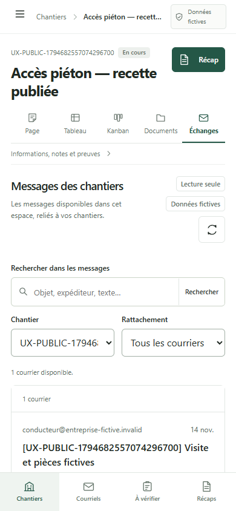
390 · kanban
390 × 844 CSS px · capture réelle
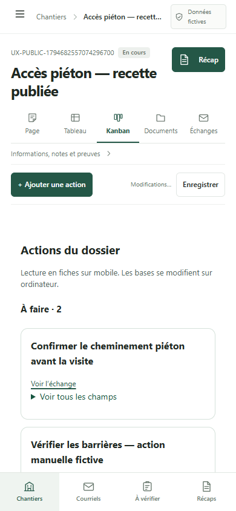
390 · navigation
390 × 844 CSS px · capture réelle
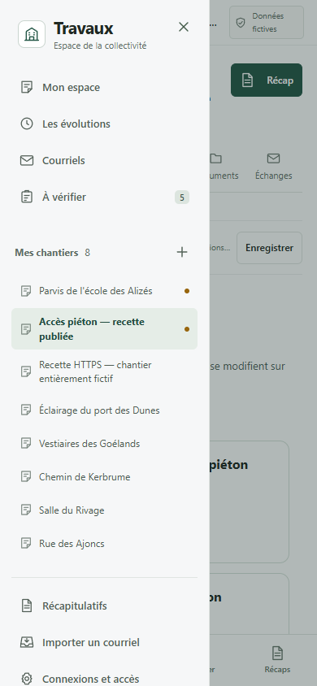
390 · page
390 × 844 CSS px · capture réelle
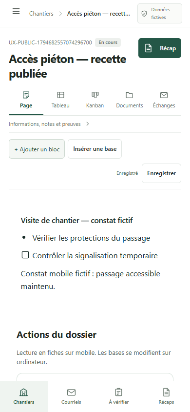
390 · tableau
390 × 844 CSS px · capture réelle
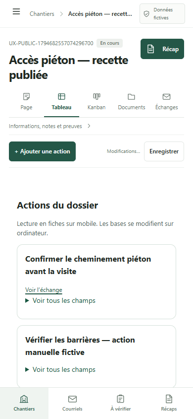